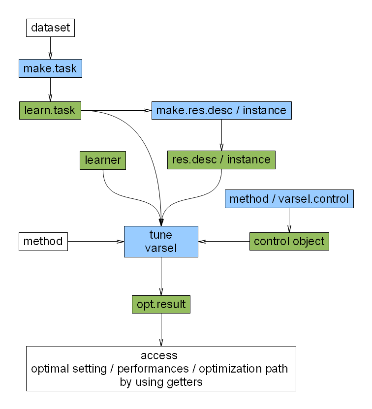

Tuning hyperparamaters¶
Many classification algorithms feature a set of hyperparameters that either need to be selected by the user or through resampling, e.g. cross-validation. Setting them by hand was already covered in the section about training and resampling – simply use the par.val argument in the train or resample methods.
Assuming, you have understood how resampling works, works, it is quite simple to implement a grid search, which is one of the standard – albeit slow – ways to choose an appropriate set of parameters from a given range of values.

Classification example¶
We again use the iris data set included in R, but now we want to tune a SVM with a polynomial kernel.
We start by loading the mlr package and creating a classification task, just like in the tutorial on training:
> library("mlrTune")
> ct <- makeClassifTask(data = iris, target = "Species")
Next we need to create a ParameterSet object which describes the parameter space we wish to search in. Since we will use a grid search strategy, we a discrete parameter for the C`and `sigma parameter of the SVM to the parameter set.
> pars <- makeParameterSet(makeDiscreteParameter("C", 2^(-1:1)),
+ makeDiscreteParameter("sigma", 2^(-1:1)))
We will use cross-validation to assess the quality of a parameter combination. For this we need to create a resampling description just like in the resampling part of the tutorial:
> res <- makeResampleDesc("CV", iters = 3)
Before we can actually tune our classifier, we need an instance of a TuneControl object. These describe the optimization strategy used. Here we use a grid search:
> gridControl <- makeTuneControlGrid()
Finally, by combining all the previous pieces we can tune the SVM using our TuneControl instance using the resampling strategy described by the res variable.
> tune("classif.ksvm", task = ct, resampling = res, par.set = pars,
+ control = gridControl)
Opt. pars: C=0.5,sigma=0.5
mmce.test.mean=0.04 mmce.test.sd=0.0693
Let’s take another closer look example above. The parameter grid has to be a named list, where every entry has to be named according to the corresponding parameter of the underlying R function (in this case “ksvm” from the kernlab package, see its respective help page). Its value is a vector of feasible values for this hyperparameter. The complete grid is just the cross-product of all feasible values.
(Please note that with ksvm we encounter a somewhat special case, as the parameters should be passed through the “kernel” and “kpar” structures. To make this simpler, t.svm allows direct passing. Again, see documentation.)
Tune now simply performs the cross-validation for every element of the cross-product and selects the one with the best mean performance measure.
SVMs exhibit another special case with regard to tuning, as one generally does not want to optimize over a complete cross-product, when using different kernels with different kernel parameters. mlr therefore allows “ranges” to be a list of ranges: <br> Let’s tune SVMs with polynomial and gaussian kernels on iris
> ct <- make.task(data = iris, target = "Species")
> r1 <- list(C = c(0.5, 1, 2), kernel = "polydot", degree = 1:3)
> r2 <- list(C = c(0.5, 1, 2), kernel = "rbfdot", sigma = c(0.1,
+ 0.2, 0.3))
> res <- make.res.desc("cv", iters = 5)
> r <- list(r1, r2)
> gridControl <- makeTuneControlGrid(ranges = r)
> tune("classif.ksvm", ct, res, control = gridControl)
Regression example¶
Let’s tune k of a k-nearest-neighbor-regression model (implemented in package kknn) on the BostonHousing data set.
> library("mlbench")
> data(BostonHousing)
> rt <- makeRegrTask(data = BostonHousing, target = "medv")
> pars <- makeParameterSet(makeDiscreteParameter("k", 1:7))
> res <- makeResampleDesc("cv", iters = 5)
> gridControl <- makeTuneControlGrid()
> tune("regr.kknn", task = rt, resampling = res, par.set = pars,
+ control = gridControl, measures = mse)